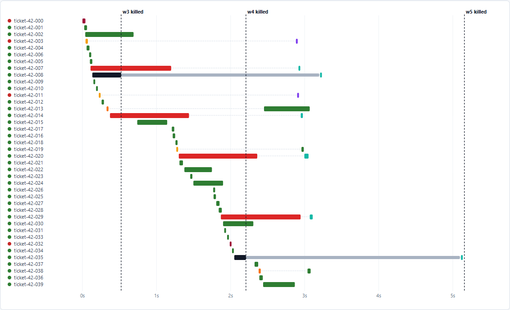

Open-source demo · AI background jobs
No lost jobs. No surprise bills.
Before
Random failures,
surprise bill
→
After
Safe retries,
hard spending cap

timeout
worker killed
job held, then taken back
stored reply, not paid again
Real chaos run: workers killed mid-call, jobs picked up again, nothing paid twice